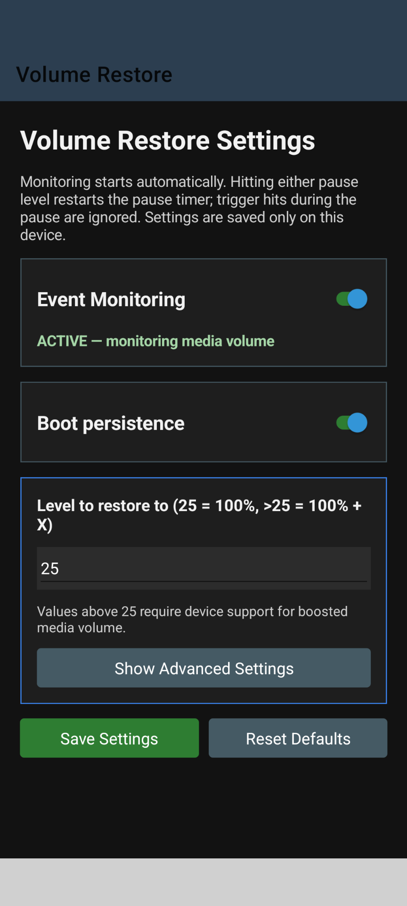

Home / VolumeRestore
VolumeRestore
A .NET MAUI Android app that monitors media volume and restores a configured level when a trigger level is reached.
View on GitHubBack to homeThe problem it solves
Newer Android versions automatically lower the volume when headphones are detected. When a car stereo or speaker is registered as headphones, this leaves the volume far too quiet every time you connect.
VolumeRestore watches the media volume and, when it drops to a trigger level, puts it back to your chosen level, countering the automatic headphone-volume lowering.
Key features
- Monitors media volume in the background
- Restores volume when a configured trigger level is reached
- Configurable restore level (full or a set value)
- Aimed at Android 17+ / Pixel behaviour
Tech stack
Screenshots
